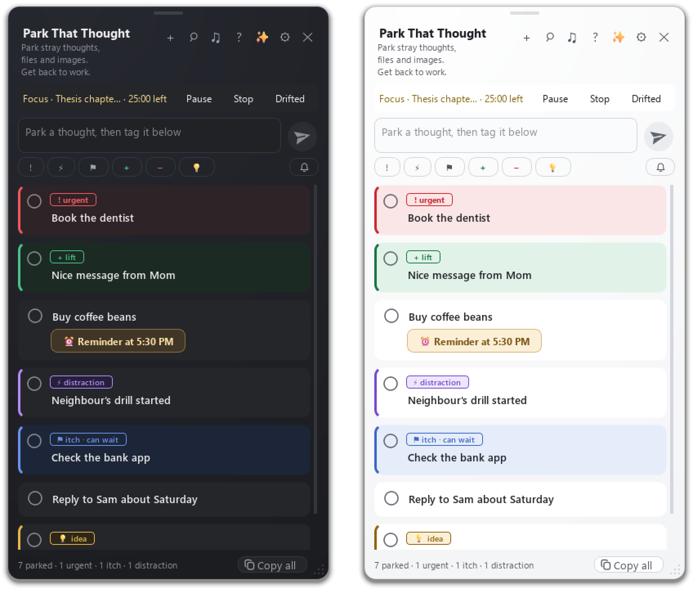

A tiny floating cloud for Windows that catches stray thoughts while you work, so you can stay focused.
You're in the middle of something and a thought pops up. Instead of switching apps, you park it in two seconds and keep going. At your next break, every thought gets one of three exits: done, later, or let go.
It also shows your next meetings from Google Calendar on a small bar above the taskbar, runs focus rounds, and reminds you to drink water and rest your eyes.

Download for Windows · Source code and full guide · Privacy policy
Free and open source. No account, no ads, and your notes stay on your PC.